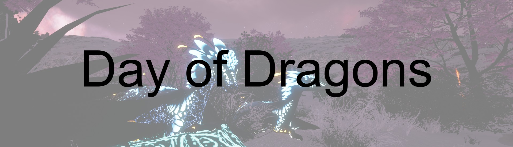

Day of Dragons is an online creature survival game set in a large, beautiful open world with distinct creatures.
You can play as one of several dragon species or (in the future) as an elemental.
Please note: this game is still in Early Access, bugs and glitches can be expected.
Since the game is still in Early Access, updates and patches will be dropped frequently. Some may drop earlier than others as the creators of this game prefer quality over quantity.
Some of the following updates will be:
Click here to follow the updates more specifically.
This website is NOT made by the official Day of Dragons team.
If you notice any wrong or missing information or got any feedback, please message me via Discord (dragon.wolf).